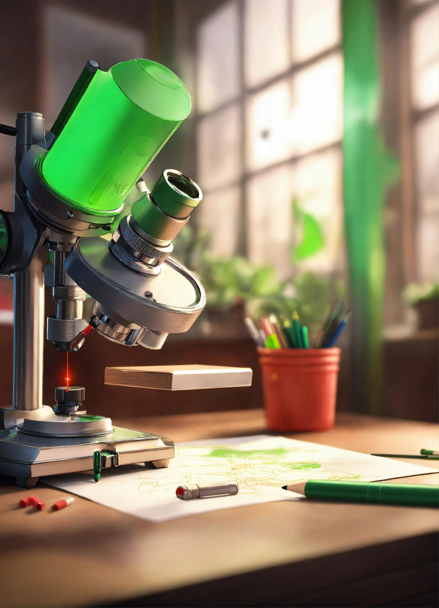
PLANT CELL
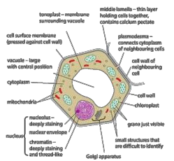
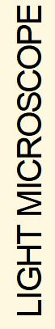
ANIMAL CELL
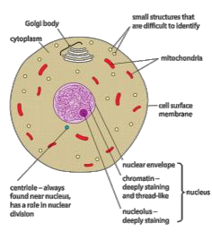
PLANT CELL
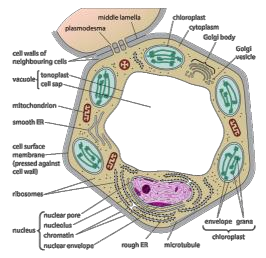
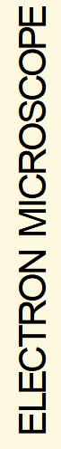
ANIMAL CELL
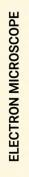
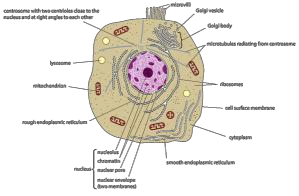
Images: Cambridge International AS & A Level Biology Coursebook
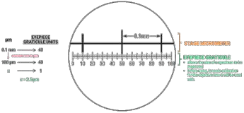
CONVERSIONS
1 mm = 1000 or 103 µm
1 µm = 1000 or 103 nm
magnification – how much bigger a sample appears
to be under a microscope than it is in real life
resolution – the ability to distinguish between 2
separate points.
- as resolution increases, image clarity and detail also increase
LIGHT ELECTRON
RESOLUTION 200 nm SEM – 3 nm
TEM – 0.5 nm
MAGNIFICATION x1500 x250,000 – x500,000
a) Light microscopes • limit of resolution: half the wavelength
• ribosomes (25nm) can’t be seen with a light microscope as they don’t interfere with the light waves
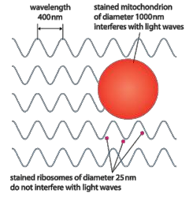
• different stains are absorbed by different cell organelles so they can be observed more clearly
b) Electron microscopes • vacuum (electrons cannot be focused without a vacuum as they will collide with air molecules and scatter) • water boils at room temperature in a vacuum, so the sample must be dehydrated (specimen has to be dead)
Advantages of a light microscope over an electron microscope 1) can observe living tissue 2) more portable 3) easier to use - no technical training required 4) possible to see real/natural colours and a live specimen 5) can stain particular types of tissue for better visibility
The cell is the basic unit of all living organisms.
The interrelationships between these cell structures show how cells function to transfer energy, produce biological molecules including proteins and exchange substances with their surroundings.
a) Plant cells
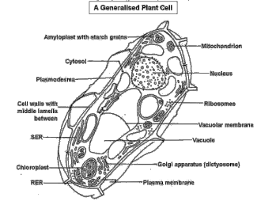
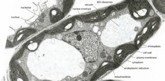
b) Animal cells
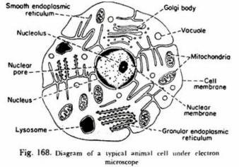
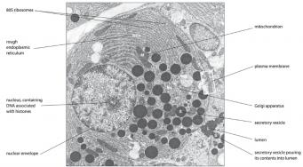
• selectively permeable membrane that allows for the exchange of certain substances • barrier between cytoplasm and external environment • cell recognition (surface antigens)
• selection of substances that enter/leave cells
Controls cell’s activities
envelope which is continuous with the RER.
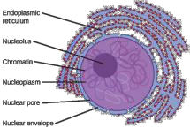
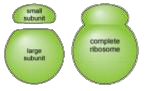
• membranes that form an extended system of fluid- filled sacs (cisternae) • single membraned organelle
• ribosomes are attached to the RER and are the site of protein synthesis • proteins made by the ribosomes enter the sacs and are often modified as they go through them • small sacs (vesicles) break off from the ER and join to form the golgi body
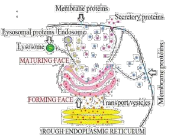
Facts. Bezmialem Science. 7. 331-338. 10.14235/bas.galenos.2019.2806.
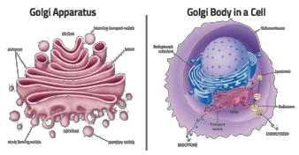
• stack of flattened sacs (cisternae) formed by the vesicles which bud off from the RER • Single membraned organelle • Packages substances into vesicles for transport • glycosylation • phosphorylating proteins • assembly of polypeptides into proteins (4º structure) • folding proteins
• removing the 1st amino acid methionine to activate proteins
• synthesizes lipids and steroids such as cholesterol and the reproductive hormones estrogen and testosterone.
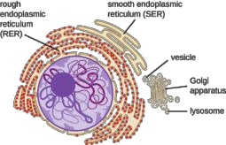
• spherical sacs surrounded by a single membrane
• not permanent structures • no internal structure • contain hydrolytic enzymes
• responsible for digestion/breakdown of unwanted structures e.g., old organelles • can even digest whole cells e.g., in mammary glands after the period of lactation
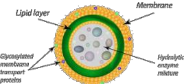
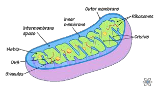
• carries out aerobic respiration • synthesizes ATP (adenosine triphosphate)
• more in cells that have a higher demand for energy e.g., muscle, liver, and root hair cells • outer membrane contains a transport protein called porin
• energy released from energy-rich molecules e.g., sugars and fats during respiration is transferred to molecules of ATP • ATP is the energy-carrying molecule in all living cells
• once made, ATP leaves the mitochondrion and can spread rapidly to all parts of the cell where energy is needed • its energy is released by breaking ATP down to ADP (adenosine diphosphate) in a hydrolysis reaction • see Chapter 12.2(i) for more details
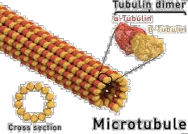
• tubulin has 2 forms – “ & β tubulin • “ & β tubulin molecules combine to form dimers • many dimers are joined end to end to form protofilaments • 13 protofilaments are in a ring to form a cylinder with a hollow center • this cylinder is the microtubule
• supports and gives shapes to the cell
• the assembly of microtubules from tubulin molecules is controlled by special locations in cells called microtubule organizing centers (MTOCs)
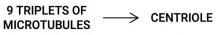
• outside the nucleus of animal cells, 2 centrioles are present close together at right angles in a region called the centrosome
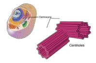
• centrioles are hollow cylinders about 500 nm long • produces spindle fibers • organizes microtubules
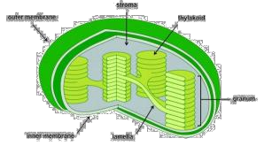
• contains starch grains, circular DNA, and 70S ribosomes • ATP is also produced here
• see Chapter 13.3(a) for more details
• gives cell definite shape • rigid as made of cellulose • freely permeable • prevents cell from bursting
• plant cells are linked to neighboring cells by means of fine strands of cytoplasm called plasmodesmata which pass through pore-like structures in their walls
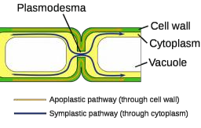
• allows the transport of water, sucrose, amino acids, ions, etc., between cells without crossing membranes • this is called movement through the symplastic pathway • allows communication/signaling between cells.
13) Vacuoles
• surrounded by a partially permeable tonoplast which controls exchange between the vacuole and cytoplasm
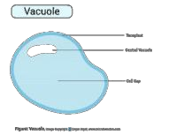
• helps regulate osmotic properties of cells • fluid present in the vacuole consists of:
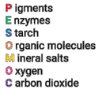
• organisms that lack nuclei or proper nuclear membranes are called prokaryotes • unicellular
• 1-5um • cell wall made of murein (peptidoglycan = protein + polysaccharides) • no membranes around organelles • 70S (smaller) ribosomes • genetic material in the form of circular DNA
• have no ER
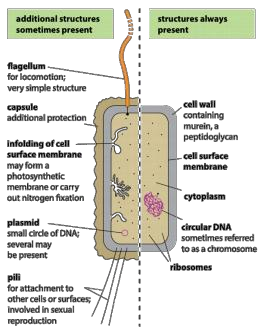
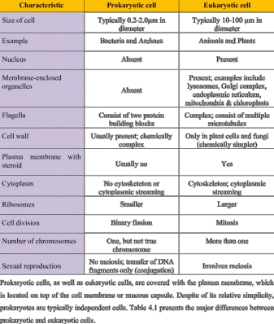
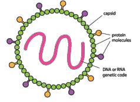
• noncellular/acellular
• protein coat • nucleic acid core; DNA/RNA strand • replicate inside host cells only • show no characteristics of living organism • symmetrical shape
• the virus DNA/RNA takes over the protein synthesizing machinery of the host cell which helps to make new virus particles
changes are observed:
monosaccharide constituents in a hydrolysis reaction
and their presence can be tested by Benedict’s test
throughout the liquid, this kind of mixture is called the emulsion
atoms which form a purple complex with Cu2+ ions
used For extra details on performing food tests, see paper 3 notes.
All living organisms are made of C, H, O + N molecules.
polysaccharides
combine to form a polymer, e.g. – monosaccharides, amino acids, nucleotides
repeating subunits, e.g. – polysaccharides, proteins, nucleic acids
polymerisation of monomers, e.g. – polysaccharides, proteins (polypeptides), nucleic acids (polynucleotides)
HEXOSES PENTOSES
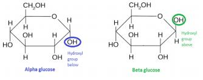
Roles of monosaccharides 1) source of energy in respiration – C-H bonds can be broken to release a lot of energy which is transferred to help make ATP from ADP
2) building blocks for larger molecules – glucose is uses to make the polysaccharides starch, glycogen, and cellulose; ribose is one of the molecules used to make RNA and ATP, deoxyribose is one of the molecules used to make DNA
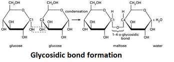
condensation is called a glycosidic bond
A polymer whose subunits are monosaccharides joined
by glycosidic bonds
glucose)
dissolve and make the contents of the cell too concentrated which affects its osmotic properties
inert, insoluble
1) Starch amylose + amylopectin
AMYLOSE AMYLOPECTIN
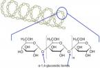
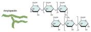
also made of 1,4 linked “- glucose molecules
made by condensation reactions between 1,4 linked “-glucose molecules
chains are shorter than amylose and branch out to sides
long, unbranching chain
chains are curved and coil into helical structures making the final molecule more compact
branches are formed by 1-6 linkages
and removal of glucose
potential (Ψ)
3) Cellulose →polymer of β-glucose
atom where the OH group is below the ring; every other glucose is rotated 180°
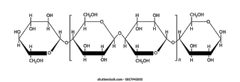
by hydrogen bonding
makes it possible for a cell to withstand large pressures as a result of osmosis
permeable
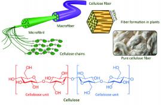
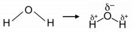
being more electronegative and therefore gets a small negative charge denoted by delta (‘-)
small positive charges (‘+)
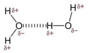
attracted to a positively charged hydrogen of another, this attraction is called a hydrogen bond
Molecules which have groups with dipoles are polar
Molecules which do not have dipoles are non-polar
(water-hating)
hydrocarbon tails attached to the acid which are 15- 17 carbon atoms long
therefore don’t have maximum amount of hydrogen atoms
atom
OH) produces an ester
an ester linkage/bond and is formed by a condensation reaction
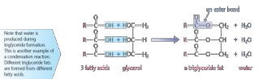
polar nature of hydrocarbon tails – they don’t have uneven distribution of charges and are hydrophobic
Roles of triglycerides
All proteins are made from the same monomer - amino acids.
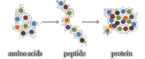
is
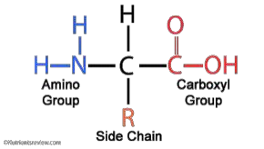
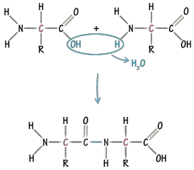
together by peptide bonds is a polypeptide
breaking the peptide bonds in a hydrolysis reaction
intestine during digestion
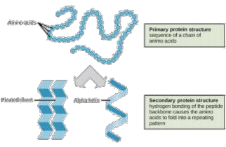
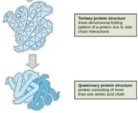
Bonds in the tertiary structure
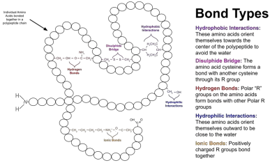
PROTEINS
GLOBULAR FIBROUS
spherical/balled shaped
polar, hydrophilic R- groups point to the centre of the molecule away from watery surroundings
proteins that form long strands
groups are on the outside which makes mixing + dissociating in water easier
usually soluble usually not soluble in water
precise shape, have roles in metabo specific
activities and are have structural roles
li
c n
i
nature
e.g., keratin, actin, myosin, collagen
e.g., enzymes, haemoglobin, myoglobin
haemoglobin
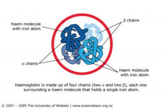
of oxygen or 8 oxygen atoms
each in a helical shape
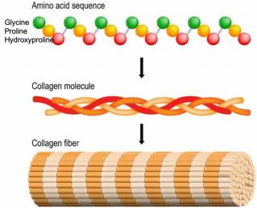
collagen molecules running parallel to it
withstand
enzymes are globular proteins that catalyse metabolic reactions function as biological catalysts specific in nature precise 3D shape with hydrophilic R-groups on the outside ensuring they’re soluble possess active sites which are clefts/depressions to which a substrate can bind
ENZYME
S
INTRACELLULAR EXTRACELLULAR
functions inside of cells functions outside of cells
synthesised and retained in
synthesised in cell but
cell
secreted out
idea that enzymes have particular shapes into which their substrate fits into exactly enzyme is said to be specific for a substrate
substrate is partially complementary to the activesite the active site changes shape slightly to ensure a better fit and stronger binding of substrate this makes catalysis even more efficient
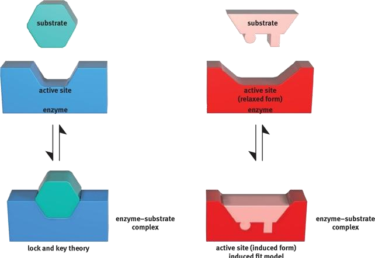
in many chemical reactions, the substrate will not be converted to a product unless it’s temporarily given extra energy this extra energy is activation energy (Ea) enzymes do this by holding their substrates in a way that bonds can be broken more easily hence reducing Ea or the shape is slightly changed, making it easier to change the substrate to a product (induced fit theory)
when the enzyme and substrate are first mixed, there’s a large number of substrate molecules therefore almost every enzyme has a substrate in itsactive site this makes the rate of enzyme-controlled reaction fastest at the beginning
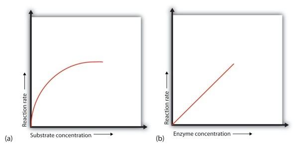
rate of reaction is slow at lower temperatures as molecules are moving slowly which makes collisions happen less frequently as temperature rises, enzymes and substrates movefaster, and collisions happen more frequently when they collide, they do so with more energy which makes it easier for bonds to be formed and broken if temperature keeps increasing, bonds holding enzyme in shape (ionic, hydrogen bonds) break andthe enzyme is said to be denatured the temperature at which enzymes catalyse a reaction at maximum rate is the ‘optimum temperature’ in humans, this is around 40°C
pH is a measure of the H+ ions in a solution H+ ions can affect the R-groups of amino acids which affects the ionic bonding between groups which in turn affects the 3D structure of the enzyme Active site may also be changed, reducing chances of a substrate fitting in
the more enzymes present, the more active sites are available for substrates to fit in as long as there’s plenty of substrate available, initialrate of reaction increasing linearly with enzyme concentration
as substrate concentration increases, initial rate of reaction also increases the more substrate molecules there are around, the more often an enzyme’s active site can bind with one saturation point – enzymes working at max (Vmax) all active sites are filled up enzyme moves to find substrates as it gets less, collision forces start to decrease
STARCH →MALTOSE →GLUCOSE
too much product so difficult to find substrate acting as inhibiting agent
if the concentration of inhibitor rises or substratefalls, it becomes less likely that the substrate will collide with an active site can be reversed by increasing the concentration of substrate
disrupts the three-dimensional shape of enzyme preventing the substrate from fitting into the activesite as its distorted increasing the substrate concentration has no change on the rate of reaction here
End product inhibition – as enzyme converts substrate into product, rate is slowed down at theend as the product binds to another part of the enzyme and prevents more substrate binding
affinity – enzyme willingness to bind to a substrate at Vmax, all enzyme molecules are bound to substrate molecules; the enzyme is saturated with substrate
As substrate concentration is increased, reaction raterises until the max rate i.e., Vmax
Km (Michaelis-Menten constant)
the substrate concentration at which enzyme works at half its maximum rate half the active sites of enzymes are occupied by substrate
An enzyme with a lower value of Km has a high affinity to its substrate
uncompetitive-inhibitors/
enzyme is mixed with a solution of sodium alginate droplets of this mixture are added to calcium chloride solution a reaction occurs forming jelly/beads enzyme is immobilised in the bead
1) enzyme is reused
2) enzyme is easily recovered
3) product isn’t contaminated with enzymes
4) reduces product inhibition
5) enzyme is more stable/less likely to denature
6) longer shelf-line of enzyme
‘mosaic’ refers to the scattered proteins (and
glycoproteins) in the phospholipid bilayer
polar tails do not face water. Water is on both the intracellular and extracellular sides
face the aqueous medium
Membrane fluidity
Membrane fluidity refers to the viscosity of the lipid bilayer of a cell membrane.
Membrane fluidity is affected by: 1) tail length – longer the tail, the less fluid the membrane 2) saturation of fatty acid – the more unsaturated they are, the more fluid the membrane. This is as unsaturated fatty acid tails are bent and fit together more loosely
3) cholesterol
fluidity of the membrane preventing it from being too rigid, this is because it prevents close packing of phospholipid tails
fluidity of membrane and stabilises the cell
Lipid and protein molecules on the outer surfaces of cell membrane have carbohydrate chains attached to them forming glycolipids and glycoproteins
These carbohydrate chains projecting out like antennae:
recognition
outside of the cell membrane i.e., intracellular, and extracellular
embedded within the membrane
layer, outer layer or spanning the whole membrane (these are transmembrane
proteins – communication, receptors, and recognition proteins
proteins)
proteins- structural support, attached to the cytoskeleton of the cell
and out of cell
Function of transmembrane proteins
facilitated diffusion and active transport
Channel proteins
Carrier proteins
Cell surface receptors
markers
Cell surface antigen
in an organised way
a response
and bind to receptors in the cytoplasm or nucleus.
1) signal arrives at protein receptor in cell membrane 2) the receptor’s shape is complementary to the ligand 3) the signal brings about a change in the receptor’s shape 4) changing the shape of the receptor allows it to interact with the next component of the pathway so the message gets transmitted 5) binding triggers/stimulates reactions within the cell 6) cell signalling results in a response which may be intracellular or extracellular
> Net movement of molecules or ions from a region of higher concentration to a region of lower concentration down a gradient, as the result of the random movement of particles.
Factors affecting diffusion
much easily across the cell surface membrane as they’re soluble in phospholipid tails
> Diffusion of a substance through transport proteins in a cell surface membrane.
molecules or ions to pass through the membrane which would otherwise be less permeable to them
controlling ion exchange
opens alternatively to each side
> Net movement of water molecules from a region of higher water potential to a region of lower water potential through a partially permeable membrane as a result of their random motion.
Water potential
> Tendency of water to move out of solution.
this happens until water potential is the same throughout the solution
concentration is very high
RBC /ANIMAL
CELLS PLANT CELLS
WATER LOSS crenated plasmolysed,
flaccid
WATER GAIN haemolysed /
lysed turgid
proteins, across a cell membrane, against their concentration gradient, using energy from ATP.
change shape, transferring molecules/ions across the membrane in the process
FOR EVERY ATP MOLECULE USED
3Na+ - given out the cell
2K+ taken in the cell
> A type of active transport where large molecules are transported across the cell surface membrane, using energy from ATP.
> Bulk movement of liquids (pinocytosis) or solids (phagocytosis) into a cell by the infolding of the cell membrane to form vesicles containing the substance.
> Bulk movement of liquids or solids out of a cell by the fusion of vesicles containing the substance with the cell surface membrane.
Chromosomes are thread-like structures made of DNA.
replicated chromosomes
the microtubules of the spindle attach, via the
kinetochore, during cell division.
found at the ends of chromosomes
DNA is the molecule of inheritance and is made up of a series of genes.
daughter cell and the other to the other daughter cell, making the daughter cells genetically identical
adult human is about 1.8m, this needs to be fit into a nucleus of 6μm
proteins called histones
condense DNA to chromatin
- chromatin – a complex of nucleic acids (DNA and RNA) and other proteins whose primary function is to compress DNA into a compact unit which will fit inside the nucleus
Nucleosomes
information, but allows telomerase to complete copying the meaningful DNA
Processes of growth, development, and reproduction.
for growth
dividing or not
chromosome consists of 2 identical chromatids: DNA replication
sharp increase in production of the protein tubulin is observed which is needed to make microtubules for mitotic spindle
cell types is called its potency
cells into damaged tissue to treat a disease or injury
divide repeatedly and form a tumour
radiations (UV, X-rays), tar, nuclear fallout
Cellular changes that occur in development of cancer
leading to formation of an oncogene from a proto- oncogene
receive/respond to signals that tell it to stop dividing)
showing an abnormal change in shape
1) Prophase
condense
across equator of the spindle
opposite poles, centromeres are first pulled by microtubules
chromosomes are pulled to the opposite ends
nucleolus reforming
poles of cell
The division of cytoplasm.
Cytokinesis in plant cells
Cytokinesis in animal cells
Differences in plant and animal cell mitosis
plate, there is no cleave furrow formation
its centromere and microtubules
- kinetochore – protein molecules which bind to DNA in centromere and microtubules - bundles of microtubules called spindle fibres extend from kinetochores to poles of spindle during mitosis
microtubule organising centre (MTOC) for construction of the spindle
3) Centrioles
separates sister chromatids
5’ end –
3’ end –
f h h t
f h d l
DNA molecules replicate by semi-conservative replication – half of the original molecule is kept/conserved in eachof the new molecules.
1) double helix of DNA is unwound by enzyme helicase
- it does this by splitting hydrogen bonds between
bases
- the unwinding of DNA strands creates a ‘replication
fork’ (a y-shaped structure)
2) enzyme primase synthesises a short piece of RNA called primer which marks the starting point for synthesis of new strand
3) DNA polymerase uses the primer and synthesises new strand
- DNA strands are anti-parallel to each other, and DNA polymerase can only add bases in one direction which is 5’ to 3’
- one of the new strands, the leading strand, is made continuously
- DNA polymerase progresses down the strand adding bases in a 5’ to 3’ direction
- when using the lagging strand as a template, DNA polymerase adds nucleotides in short stretches called okazaki fragments to overcomedirectionality problem
4) DNA ligase seals up fragments of DNA in both to forma continuous double stranded helix
A polypeptide is coded for by a gene and that a gene is a sequence of nucleotides that forms part of a DNA molecule.
- types of gene mutations: substitution, deletion, insertion, inversion, frameshift
- alleles – variants of genes (caused by mutations)
Process by which enzymes use the sense strand of DNAas a template to produce a messenger RNA (mRNA) molecule.
1) RNA polymerase binds to a region of gene called promoter
2) RNA polymerase reads sense strand in a 3’ to 5’ direction and generates mRNA from 5’ to 3’
3) when RNA polymerase has reached the terminator sequence at the end of the gene, transcription stops
- enzyme detaches from gene and DNA returns to original structure
4) last triplet transcribed to mRNA is a DNA triplet coding for STOP e.g., ATT, ATC, ACT (in DNA the stopcodons are UAA, UGA, UAG)
Process by which the genetic code in mRNA is read to make a protein.
1) mRNA leaves the nucleus and binds to the smaller ribosomal unit
2) every 3 bases (a codon) on mRNA codes for a specific anti-codon which is carried by a transfer RNA(tRNA) molecule
3) an initiator tRNA adheres to a START codon
4) the tRNA that corresponds to the next codon after the START codon enters the ribosome carrying an aminoacid with it which becomes covalently bound to methionine from the initiator tRNA
5) the first tRNA detaches and leaves the ribosome which has shifted over making room for the next tRNA molecule
PARENCHYM
COLLENCHYMA SCLERENCHYM
A
A
found in the petiole, leaves,
found in soft
found in mature parts of the plant
parts of the
and young
plant
stems
unspecialised
cells specialised cells specialised cells
cell wall made of cellulose and
cell wall made of
cell wall made
cellulose
of lignin
pectin
thin cell wall unequally thin
thick and rigid
cell wall
cell wall
lots of intracellular spaces are present
little intracellular
no intracellular
space
space
betweencells
consists of living cells at
consists of living
consists of dead
cells at maturity
cells at maturity
maturity
provides mechanical
functions
provides mechanical support to the
include photosynthesis, food storage, gas
support, protection, and
plant
transports substances
exchange
piliferous layer (also called epiblema, rhizodermis) –the outermost layer; unicellular root hairs present, cuticle and stomata absent
cortex – it is a multi-layered large zone made of parenchymatous cells with intracellular spaces and stores food and water
endodermis – the innermost layer of the cortex; the cells closely packed and have Casparian strips withintheir walls (water-impermeable deposits of suberin) which regulate water and mineral uptake by the roots
pericycle – produces lateral roots when cells here divide
stele – all tissues inner to endodermis constitute stele;here it includes pericycle and vascular bundle
vascular bundle – xylem and phloem
conjunctive tissue – the tissue present between xylem and phloem; in dicots, it’s made up of parenchyma
pith – absent in mature plants, present in young ones
Longitudinal section
epidermis – the outermost layer; made up of a single layer of parenchyma cells and its outer wall is covered with a cuticle
- cuticle prevents infection of the plant by bacteria or fungi
- also aids in reducing water loss
cortex – divided into three regions:
- hypodermis provides mechanical support
- middle cortex is involved in photosynthesis
- inner cortex helps in gaseous exchange and stores food materials
endodermis – the innermost layer of the cortex, consists of a single layer of cells that contain starchgrains
pith – large, central, parenchymatous zone with intracellular spaces; helps in storage of food materials
upper epidermis – the outermost layer made up of a single layer of parenchyma cells without intracellular spaces; outer walls have cuticles, stomata are less in number
lower epidermis – single layer of parenchymatouscells with a thin cuticle
- contains numerous stomata
- chloroplasts are only present in guard cells
- helps in exchange of gases
- loss of water vapour is facilitated through this chamber
mesophyll – tissue present between the upper and lower epidermis, differentiated into palisade parenchyma and spongy parenchyma
- palisade parenchyma: tightly packed, elongated cells with lots of chloroplasts (for photosynthesis) just below the upper epidermis.
- spongy parenchyma: spherical/oval, irregularly arranged cells with lots of intracellular spaces; helps in gaseous exchange
vascular bundles
- vascular bundle of midrib is larger
- each vascular bundle is surrounded by a sheath of parenchymatous cells called bundle sheath
- each vascular bundle consists of xylem lying towards the upper epidermis and phloem towards the lower epidermis
transports water and mineral ions via mass flow (passive)
unidirectional movement (from roots rest of the plant) composed of tracheids, vessel elements, xylem fibres,and xylem parenchyma (all dead except xylem parenchyma)
1) long hollow tubes with no end walls for uninterrupted transport of water and mineral ions
2) no cell contents (no protoplasm) to provide maximum space and minimum resistance
3) their walls are lignified to withstand negative pressure and provide mechanical support
4) cellulose lining is present for adhesion if water molecules which helps with their movement upwards
5) they have pitted walls (in non-lignified sections) for the lateral movement of water
transports sucrose and amino acids via mass flow (active process) from the source to the sink bidirectional movement (translocation) mainly composed of sieve tube elements + companion cells
Phloem sieve tube elements
1) contains ER, mitochondria, and cytoplasmic stands (cytoplasm reduces friction to facilitate the movement of the assimilates)
2) end-walls modified to sieve plates/perforated plates which allows for the continuous movement of the organic compounds
3) phloem tubes are present in a bundle
4) area where sucrose is loaded is source and where it's unloaded is sink
Companion cells
1) contains organelles such as nucleus, RER, mitochondria, and ribosomes which provides metabolic support to the sieve tube elements and helps with the loading and unloading of the assimilates
2) transport proteins are present in the plasma membrane which move assimilates in and out of the sieve tube elements
3) large numbers of mitochondria present which provideATP for the active transport of assimilates into or out of the companion cells
4) plasmodesmata are present which link the cell to the sieve tube elements
XYLEM PHLOEM
mainly dead cells (tracheids, vessel elements, xylem fibres) except for xylem parenchyma
living cells (only phloem fibres are
made of
dead)
cell wall material lignin and cellulose cellulose
walls no yes (sieve plates with sieve pores)
presence ofend
unidirectional and
bidirectional (source sink)
direction of
upwards (roots
flow
leaves)
sucrose, amino acids, and other
water and mineral
substance transported
ions
organic compounds
does not provide
provides mechanical support
mechanical
mechanical
support
support
Plants must take in a constant supply of water and dissolved minerals to compensate for the continuousloss of water via transpiration in the leaves.
Transpiration is the loss of water vapour from the aerialparts of the plant. Around 99% of all water absorbed is lost via this process.
1) water evaporates from cell walls of mesophyll cells into air spaces
2) water vapour diffuses (out to atmosphere)
3) through open stomata (to atmosphere)
4) down a water potential gradient
When the following factors increase, transpiration (↑/↓)
1) humidity (↓)
2) wind speed (↑)
3) light intensity (↑)
4) temperature (↑)
5) water supply (↓)
Transpiration is considered as an inevitable consequence of gas exchange as –
1) stomata are open for gas exchange his gas exchange is required to uptake CO2 forphotosynthesis
2) while stomata are open, water vapour diffuses out
Advantages of transpiration
1) helps in plants pulling up water from soil through roots (transpiration pull)
2) helps in sending out excessively absorbed water by plants
3) cools the plant (via evaporative cooling)
4) helps in the absorption and transport of mineral salts
5) helps in the absorption and distribution of water in plants
Transpiration pull is the force by which water ascends aplant.
water molecules cling together by hydrogen bonds between molecules known as cohesive forces
water molecules experience attraction towards the cellulose in the cell walls of the xylem (adhesion)
Cohesion-adhesion theory
water molecules tend to cling to one another via hydrogen bonds (cohesion)
when water evaporates from the surfaces of mesophyll cells, a tension is created in the xylem tissue which is transmitted all the way down the plantdue to the cohesiveness of the water molecules
the cohesive forces thus produce a continuous column of water (transpiration stream)
the adhesive force stops the water column from pulling away from the walls of the xylem vessels, so water is pulled up the xylem tissue from the roots to replace what was lost in the leaves
this is known as the cohesion-adhesion theory
1) uptake of water – water moves into root hairs via osmosis down a water potential gradient (passive)
2) root hairs provide max surface area for the max absorption of water
3) the uptake of minerals can be passive or active and occurs by diffusion or active transport respectively
1) water taken up by root hairs crosses the root cortex
pathway
symplastic pathway
2) water moves from one cell to another till it reaches xylem; movement is due to concentration gradient dueto concentrated sap vacuole of cells
3) apoplastic pathway is stopped at endodermis due to cells in it having a band of suberin forming the Casparian strip (an impenetrable barrier to water)
- gives plants control over what mineral ions pass into xylem vessels (everything must crosscell membranes)
- may help with generation of root pressure
4) once across endodermis, water moves into xylem through pits in their walls
1) removal of water from xylem vessels in leaf reduces hydrostatic pressure in xylem
2) hydrostatic pressure at top of xylem becomes less than bottom
3) pressure difference causes water to move up the xylem
Apoplastic pathway
most water travels via the apoplastic pathway (when transpiration rates are high) these are the series of spaces running through the cellulose cell walls, dead cells, and the hollow tubes ofthe xylem the water moves by diffusion as it isn’t crossing a partially permeable membrane the water can move from cell wall to cell wall directly or through the intracellular spaces movement of water via this pathway occurs more quickly than in the symplastic pathway
this movement is however stopped at the endodermisdue to the presence of the Casparian strip
Symplastic pathway
movement through the cytoplasm, plasmodesmata, or vacuole of cells (crossing membranes) the water moves by osmosis (across partially permeable membranes)
https://commons.wikimedia.org/w/index.php?curid=12063412
1) H+ ions are pumped out (active process, ATP required)of the cytoplasm of modified companion cells (called transfer cells)
2) this creates an excess of H+ ions in the apoplastic pathway outside the cell
3) H+ ions move back into the cell down their concentration gradient back into the cytoplasm of the companion cell via a cotransporter protein
4) this cotransporter protein acts as a carrier for both H+and sucrose (so sucrose moves into the companion cell too but against its concentration gradient)
5) sucrose then moves into the sieve tubes via the plasmodesmata from the companion cell
- companion cells have infoldings in their cell surface membrane to increase the available surface area for the active transport of solutes
- many mitochondria also present provide the energy for the proton pump
1) when sucrose is loaded into a sieve tube element, the water potential decreases 2) this causes water from surrounding tissue to enter by osmosis
3) this increased volume increases the hydrostatic pressure at the source compared to the sink
4) assimilates move down a hydrostatic pressure gradient to the sink
the source of the assimilates could be:
1) green leaves and green stem (photosynthesis produces glucose which is transported as sucrose, as sucrose has less of an osmotic
effect than glucose)
2) storage organs eg. tubers and tap
roots (unloading their stored
b h b i i f
ld b
1) meristems (apical or lateral) that are actively dividing 2) roots that are growing and / or actively absorbing mineral ions
3) any part of the plant where the
assimilates are being stored (eg. developing
are plants that are adapted to dry and
xerophytes have physiological and structural (xeromorphic) adaptations to maximise water conservation
It’s called closed circulation as the blood remains within blood vessels.
DOUBLE CIRCULATION
SYSTEMIC
PULMONARY
CIRCULATION
CIRCULATION
right ventricle →
left ventricle →AORTA →
PULMONARY ARTERIES →
body (except lungs) →
In the cytoplasm of red blood cells, CO2 is catalysed by carbonic anhydrase enzyme when it reacts with water to form carbonic acid
ATRIOVENTRICULAR – TENDONS SEMI-LUNAR –
POCKETS
SYSTOLE – CONTRACTION, DIASTOLE – RELAXATION
1) blood goes only to the lungs which are at a shorter distance + less resistance to overcome
2) if a too-high pressure was developed, tissue fluid would accumulate in lungs hampering gas exchange
1) SAN (sinoatrial node)/pacemaker sends out waves of excitation which stimulates atria to contract
2) non-conducting tissue between atria and ventricles prevents atria and ventricles from contracting at the same time
3) AVN (atrioventricular node) delaying the impulse allows atria to completely into ventricles
4) AVN sends impulse down to the bundle of his and along purkine fibres
5) this causes ventricles to contract from the base upwards
The gas exchange system is responsible for the uptake of oxygen into the blood and the excretion of carbon dioxide.
The gas exchange surface in the lungs is extensive, very thin, well supplied with blood and well ventilated.
The trachea and bronchi provide little resistance to the movement of air to and from the alveoli.
STRUCTUR
SUMMARY
E
throat to the bronchi
trachea
surrounded by pleural
membranes
lungs
friction free movement
between the lungs, and
diaphragm and ribs
trachea and have a similar
structure to it albeit
narrower
bronchi
times to forms smaller
bronchioles
form even narrower
respiratory bronchioles that
supply alveoli with air
that carry air from the
bronchi to the alveoli
b hi l
Cartilage
Cartilage is a flexible connective tissue of which the main cell type are chondrocytes.
Outline the function of cartilage in the human gas exchange system
1) keep airways open
2) provides support
3) allow flexibility
4) rings allow widening during inspiration
Outline the function of smooth muscle in the human gas exchange system
1) contraction and relaxation
2) changes diameter of trachea, bronchus, bronchioles
3) controls air flow in bronchioles
At the end of the pathway between the atmosphere and the bloodstream are the alveoli. They are the main site of gas exchange.
(squamous
ith li )
(one cell thick)
1) squamous epithelium is one cell thick
2) for short diffusion distance
3) collectively many so large surface area for gas exchange
4) surrounded by a network of capillaries
- the oxygen diffuses from the alveoli into the blood capillaries, before being carried away to the rest of the body for aerobic respiration
- the carbon dioxide diffuses from the blood into the alveoli and is then exhaled
| Structure | Cartilage | Goblet cells | Smooth muscle | Cilia |
|---|---|---|---|---|
| Trachea | ✓ | ✓ | ✓ | ✓ |
| Bronchus | ✓ | ✓ | ✓ | ✓ |
| Terminal bronchiole | ✗ | ✗ | ✓ | ✓ |
| Respiratory bronchiole | ✗ | ✗ | ✗ | ✓ |
| Alveoli | ✗ | ✗ | ✗ | ✗ |
> Disease – abnormal condition affecting an organism that reduces the effectiveness
of the function of the organism
> Infectious disease – a disease caused by a pathogen, is transmissible and reduces the
effectiveness of functions of the organism e.g., tuberculosis, cholera, etc.
> Non-infectious disease – long-term, degenerative diseases not caused by
pathogens and not transmissible e.g., lung cancer, sickle cell anaemia, etc.
and sub-tropical regions
Plasmodium falciparum,
P. malariae,
malaria
P. vivax, P. ovale
(airborne), M. bovis (infected
tuberculosis
(TB)
milk/cattle)
HIV/AIDS human immunodeficiency
DISEASE CAUSATIVE AGENT TYPE OF ORGANISM
cholera Vibrio cholerae bacterium
protocist
Mycobacterium tuberculosis
bacterium
virus (HIV) virus
a) Cholera Transmission – via the faecal oral route or when raw human sewage of an infected person is used to irrigatevegetables
supply and food whilst handling (due to lack of hygiene)
water’
clean watersupply
b) Malaria
> Vector – organism which carries a disease from one person
to another or from an animal to a human e.g., female
anopheles mosquito for plasmodium
Transmission
1) blood transfusion
2) when unsterilised needles are used
3) plasmodium can pass across placenta from mother to foetus
unknown source
How infection of malaria occurs?
1) female anopheles mosquito feeds on human blood to obtain the protein they need to develop eggs
2) if an infected person is bitten, the mosquito takes upthe pathogen’s gametes with the blood meal
3) male and female gametes fuse in the mosquito’s gutand develop into infective stages that move to the salivary glands
4) when the mosquito feeds again, an anticoagulant is injected from the salivary glands causing the infectivestages to pass out as well
5) the anticoagulant is injected to prevent blood from clotting
6) parasites enter the blood stream, then enter liver cells and finally infect red blood cells
Prevention and control
1) control of breeding of mosquitoes (e.g., drainage of stagnant water, aerial spraying of insecticide, oil on water, stocking ponds)
2) reduction of contact between vector and humans (e.g.,bed nets impregnated with insecticide / insect repellents)
3) earlier identification of cases (introduction of dip sticktests ensuring diagnosis can be done quickly)
4) use of new drugs to prevent transmission or usingdrugs in combination to reduce chances of drug resistance arising
5) better awareness
6) better screening of blood before transfusion
Why malaria is very difficult to control?
1) no vaccine as plasmodium is eukaryotic and antigensdiffer in the different life stages
2) drug resistance in Plasmodium
3) insecticide resistance in Plasmodium
4) cost of drugs
5) problems with funding research
6) lack of knowledge
7) infected people not identified
8) inaccessibility of some regions to healthcare
Why is it difficult to create a vaccine for malaria?
1) plasmodium is eukaryotic
2) antigens differ in different life stages
3) intracellular parasite
4) antigenic concealment
Transmission
1) semen and vaginal fluids during intercourse
2) infected blood (via donation, etc)
3) sharing needles
4) mother to foetus across placenta
5) mother to infant in breast milk
1) anal intercourse (mucous lining of rectum not as thick as a vagina’s + less natural lubrication; rectal lining is easily damaged during intercourse and virus passes from semen to blood)
2) many sexual partners
3) lack of awareness
How HIV affects the body
1) genetic material of HIV is RNA
2) viral RNA is converted to DNA inside host cells to be incorporated into human chromosomes
3) infects and destroys Thelper cells (cells that control the immune system’s response to infection)
4) when the number of Thelper cells are low, the body is unable to defend against infection allowing pathogens to cause opportunistic infections
5) AIDS isn’t a disease – it’s a collection of opportunisticdiseases associated with the immunodeficiency caused by HIV infection
Treatment
1) drug therapy (e.g., zidovudine)
2) it binds to viral enzyme reverse transcriptase and blocks its action
3) this stops the replication of viral genetic material and blocks its action and leads to an increase in the body’s lymphocytes
4) combination therapies are however difficult to follow
5) people are unable to keep up with the regimen are susceptible to strains of HIV that have developed resistance to drugs
> reverse transcriptase – an enzyme encoded by certain viruses
(retroviruses) that uses RNA as a template for DNA synthesis
Prevention and control
1) spread awareness
2) use condoms, femidoms and dental dams
3) don’t have many sexual partners
4) don’t share needles
5) contact tracing
6) blood collected by donors screened and heat treated
7) reduce mother to child transmission by using formulamilk
Transmission
1) infected person coughs
2) aerosol droplet carrying the pathogen
3) inhaled by uninfected person
4) or consumption of meat/milk of an organism carryingTB
Treatment
Prevention
Global distribution
An antibiotic is a drug that kills or stops the growth of bacteria without harming the cells of the infected organism
Antibiotics may interfere with
1) penicillin prevents the synthesis of cross links which hold together a bacterium’s peptidoglycan walls (so penicillin is only effective when bacteria are growing)
2) enzymes autolysins secreted create small holes that allow the wall to stretch so new peptidoglycan chains can link
3) penicillin prevents linking but holes continue to appearmaking the cell wall weaker
4) when bacteria take up water via osmosis, it cannot withstand the pressure potential exerted due to the weakened cell wall and bursts
1) people not completing course of antibiotics causing areservoir of bacteria to remain
2) remaining bacteria mutate to become resistantbacteria with resistance survive
3) when they reproduce they pass on the allele for resistance to their offspring
Bacteria transfer their drug-resistance by vertical or
horizontal transmission. Some mutated bacteria may have plasmids carrying several resistance genes leading
to multiple resistance.
1) decreased ability to treat infections
2) increased human illness and mortality
3) increased cost and length of treatments
4) adverse effects from alternate treatments
5) lack of availability of clinically effective antibiotics
1) don’t use antibiotics for trivial reasons or to treat viralinfections
2) complete the course
3) use a combination of antibiotics
4) don’t use as preventative medicine
5) only use wide-spectrum antibiotics when the pathogen is not known
6) rotate antibiotics so the same ones aren’t used all the time
7) don’t use the same antibiotics for animals and humans
8) don’t cell antibiotics without a doctor’s prescription
Neutrophils
Macrophages
Phagocytosis
General steps of phagocytosis
1) attraction (chemotaxis)
2) recognition and attachment
3) endocytosis
4) bacteria trapped within a phagocytotic vacuole
5) fusion of lysosomes and phagocytotic vacuole
6) killing and digestion
1) B-cells to make antibodies
2) other T-cells to divide
3) macrophages to enhance the effect of phagocytosis
This is where T-lymphocytes respond to altered cells (APC, cancer cells, cells that’ve been infected by viruses)
1) macrophage engulfs pathogen and becomes an APC 2) Thelper’s cell receptor, which is complementary to the antigen, binds to antigen on APC 3) Thelper then releases interleukins
T-lymphocytes can only recognise antigens on an APC surface
a) Clonal selection
Process by which an antigen selectively binds to and
activates only those lymphocytes bearing receptors
for the antigen. In short, this is basically recognising
and choosing which B-cells to use.
b) Clonal expansion (proliferation)
The rapid multiplication of B (or T) cell clones
after activation by an antigen.
1) plasma cells to make specific antibodies
2) memory cells to prepare for 2° response
B-cells can respond to APC as well as pathogens directly
> immune response – the complex series of
responses of the body to the entry of a
foreign antigen
body and stimulates an immune response
the immune system does not recognise as
foreign and therefore does not stimulate
an immune response
Remain in the blood for years and cause long-term protection.
Occurs when the immune system mistakenly identifies self- antigens as foreign (non-self) and mounts an immune response against them.
1) antigen is injected into a mouse
2) spleen cells which produce lymphocytes which produce antibodies are removed
3) plasma cells from spleen are fused with cancer cells or myeloma cells forming hybridoma cells that divide indefinitely
4) they divide by mitosis and produce antibodies
1) vaccine contains antigens that stimulate an immune response
2) macrophages take up virus by phagocytosis and act as antigen presenting cells (APC)
3) lymphocytes bind to these and under clonal selection
4) clonal expansion then occurs by mitosis
5) memory cells are formed
Poor response to vaccines due to:
Antigenic variation
a) Antigenic drift – minor changes in the viral antigen,
memory cells are still able to recognise them and start a secondary response
b) Antigenic shift – major changes in antigen structure
measles – poor response by some children, needs several booster shots cholera – many strains malaria – too many stages (antigenic variations) TB – symptoms may not be shown